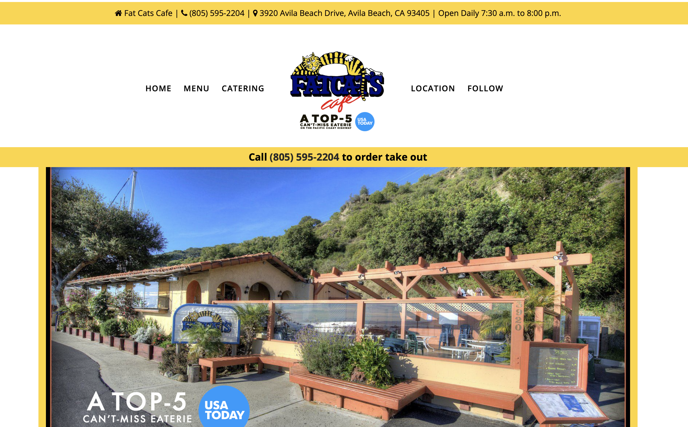
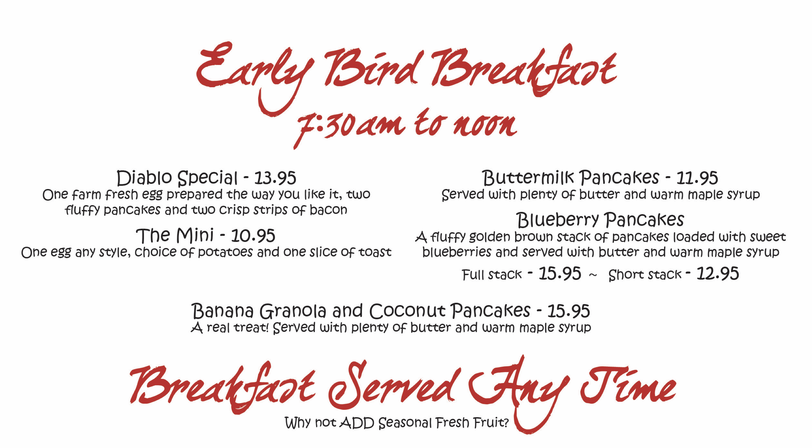
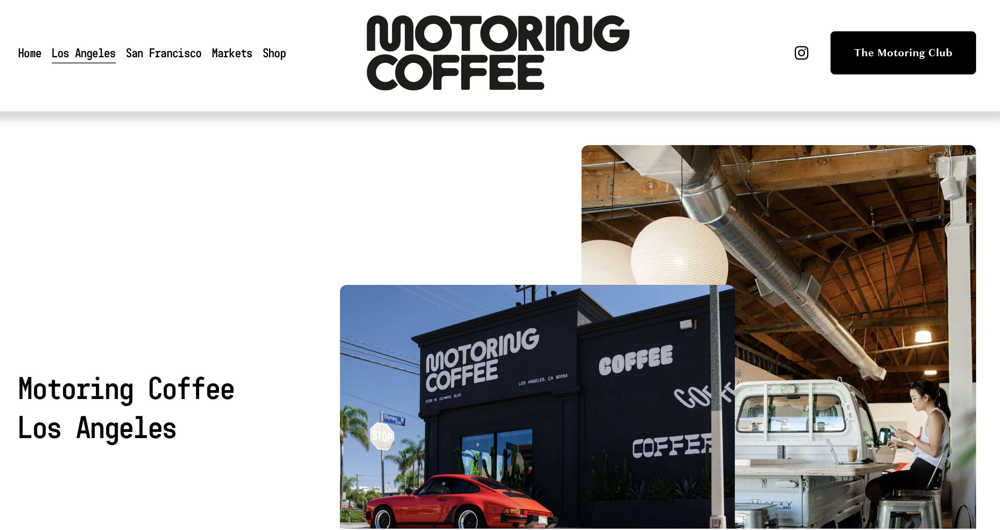
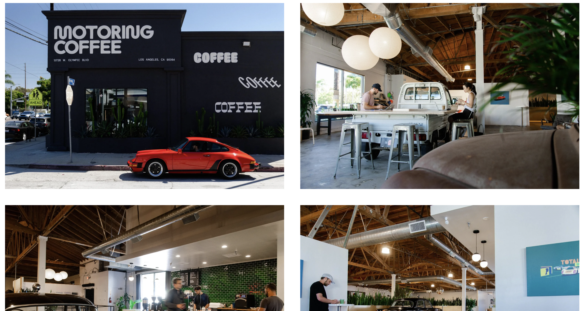
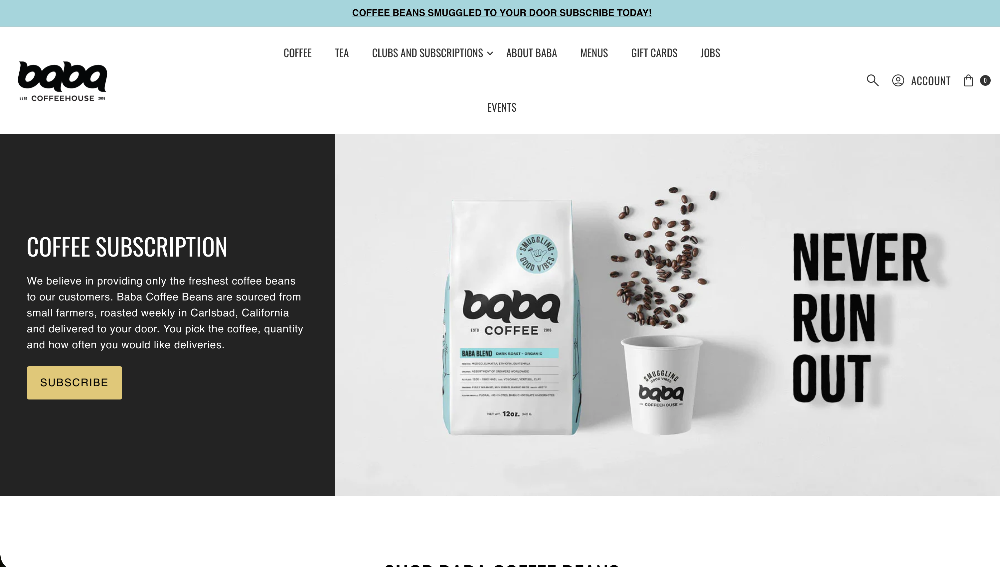
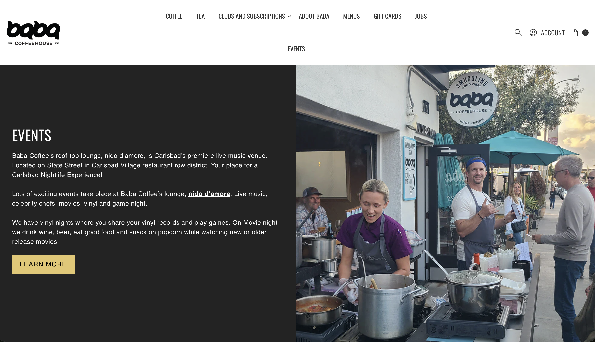

Chuck's Classic Car Cafe
Chuck's Classic Car Cafe is a staple and meeting spot in the Morro Bay community. With coffee as black as motor oil and a car meet every Saturday in the parking lot, it routinely attracts celebrities and locals alike.
This site is intended to provde information for cafe goers about upcoming car meets and cafe hours.
Their primary goal is to see dates and times for car meets and the cafe and register the cars for the events.






About Menu Location
[A classic car with a sunset behind with the cafe's name]
The central coast's best car meet cafe, car shows every Saturday
Chuck's Classic Car Cafe hosts car meets in the parking lot every Saturday starting at 8am. Normally the festivities and coffee extend till 11am.
Special events are hosted during the holiday season and summer, these will be advertised at the normally scheduled meets.
For event suggestions or inquiries please see the host stand.
Car registration will be done every Saturday for the following Saturday in person at the cafe counter.
Monday through Friday 7am - 3pm
Saturday 6am - 2pm
Sunday Closed
Closed on all holidays
658 Morro Beach Road, Morro Bay, CA 93402
805-436-8320
All rights reserved. Chuck's Classic Car Cafe, 2025
Home Menu Location
[Cafe Logo as described before]
Chuck’s Classic Car Cafe has been part of the Morro Bay scene for so long that most locals can’t remember Main Street without a line of polished chrome out front. It started back in the late ’80s when Chuck Ramirez, a retired mechanic with a soft spot for ’57 Chevys and strong diner coffee, bought a little corner spot just off Main Street. He figured he’d serve breakfast to the fishing crews at dawn and host a few car buddies on weekends. Word spread fast up and down the Central Coast. Before long, Saturday mornings meant classic cars angled along the curb, engines ticking as they cooled, oldies playing from a jukebox in the corner, and Chuck holding court at the counter telling stories about drag races at Santa Maria Speedway.
Through the ’90s and early 2000s, Chuck’s became the unofficial clubhouse for anyone within 50 miles who had grease under their nails and a project car in the garage. The Saturday morning Cars & Coffee really took on a life of its own—folks rolling in before 7 a.m. just to grab a mug of Chuck’s famously strong, no-nonsense coffee and claim a good parking spot. Tourists wandering in after a walk along the Embarcadero would stumble onto rows of Camaros, roadsters, and the occasional vintage Porsche, all with owners happy to chat. The walls filled up with black-and-white photos of past meets, faded license plates, and framed snapshots of Morro Rock with convertibles parked in front. Even after Chuck passed the apron to his daughter Elena in 2012, not much changed—except maybe the espresso machine got an upgrade and they added avocado to the breakfast menu (this is California, after all).
These days, Chuck’s Classic Car Cafe still feels like stepping back in time, just with better Wi-Fi and a few more Teslas parked down the street. The Saturday Cars & Coffee crowd is as steady as ever, fueled by that strong house brew and plates of biscuits and gravy. You’ll see everything from pristine Bel Airs to primer-gray hot rods that look like they just rolled out of a Los Osos garage. The regulars still argue about carburetors versus fuel injection over bottomless mugs, and newcomers get welcomed like they’ve been coming for years. In a town known for otters and ocean views, Chuck’s remains that cozy, chrome-lined reminder that some traditions—like a good burger and a well-tuned V8—never really go out of style.
All rights reserved. Chuck's Classic Car Cafe, 2025
Home About Location
[Picture of a car meet at Chuck's]
Menu
Chuck’s Strong House Coffee & Cinnamon Roll Combo
Bottomless mug of that famously strong brew with a warm, oversized cinnamon roll dripping in vanilla glaze. Saturday morning fuel.
$8.00
Route 1 Club Sandwich
Turkey, bacon, avocado, tomato, and mayo stacked high on sourdough. Served with kettle chips.
$10.00
The Flathead Ford French Dip
Slow-roasted beef, caramelized onions, and Swiss on a hoagie roll with hot au jus for dipping.
$12.00
Main Street Biscuits & Gravy
Fluffy house-made biscuits smothered in Chuck’s peppery sausage gravy, served with two eggs.
$9.00
The Hot Rod Reuben
Corned beef, sauerkraut, Swiss, and house Thousand Island on grilled rye. Served with fries or slaw.
$8.00
The ’57 Chevy Breakfast Plate
Two eggs any style, thick-cut bacon or sausage, crispy hash browns, and toast. Simple, classic, no shortcuts.
$12.00
The Harbor Fog Latte
Vanilla latte with a light sprinkle of cinnamon on top, smooth enough for early marine-layer mornings.
$3.00
The High-Octane House Brew
Chuck’s famously strong, dark roast drip coffee. Bottomless mug, no frills, no foam art — just fuel.
$2.00
Home About Menu
Monday through Friday 7am - 3pm
Saturday 6am - 2pm
Sunday Closed
Closed on all holidays
658 Morro Beach Road, Morro Bay, CA 93402
805-436-8320
[Picture of the front of Chuck's Cafe]